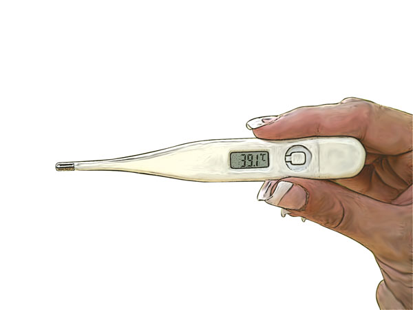

Taking a Temperatue
Taking a Temperatue
1. Wash hands.
2.
Explain the procedure to the casualty.
3. Wipe the thermometer with an alcohol swab and allow to dry. Use a disposable plastic sleeve if appropriate for digital type.
4. Shake the mercury down or turn digital thermometer on.
5.
Place bulb or sensor under tongue (make sure mouth closed) or under armpit (wipe armpit dry prior to insertion).
 Mouth – keep in place for 2 minutes (until beep with
Mouth – keep in place for 2 minutes (until beep with
digital thermometer).
 Armpit – keep in place for 10 minutes (until beep with
Armpit – keep in place for 10 minutes (until beep with
digital thermometer).
6.
Remove thermometer, read temperature and record the reading.
7.
Wash the thermometer in cold water after use.
8.
Wipe thermometer with alcohol swab and store dry in container.